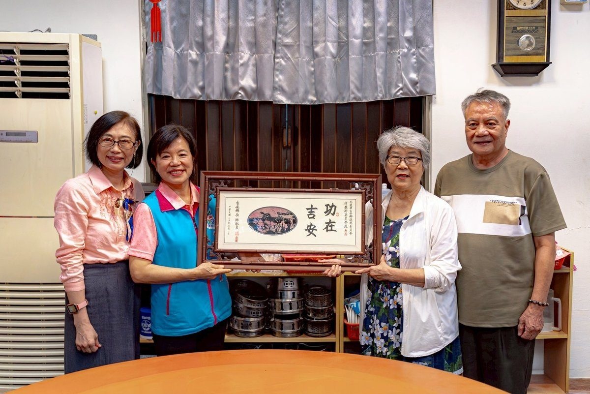

守護和諧功成身退！吉安鄉長游淑貞致謝調解委員褚慶澎十載深情

可樂電子報小編/編輯
吉安鄉公所調解委員會聘任的十五位專業調解委員，長期協助鄉親化解紛爭、排解糾紛，深獲地方民眾信賴。其中服務逾十載的資深委員褚慶澎，日前因人生規劃提出請辭，鄉長游淑貞為感謝其多年無私奉獻，特別頒贈「功在吉安」匾額，致上最誠摯的敬意與祝福。

游淑貞鄉長指出，褚慶澎委員學經歷極為豐富，長期投入教育與媒體領域，更跨足公益服務工作。在擔任調解委員期間，褚委員始終秉持高度同理心，以專業化解無數爭議，展現服務社會的熱忱，不僅是吉安鄉難能可貴的人才，其展現的無私精神更令人敬佩。

褚慶澎表示，一生投入職場與社會服務，如今希望將更多時間留給自己進行健康管理。她感謝游鄉長的信任，讓她有機會透過調解工作，協助鄉親在協商中尋求互利共好的解決方式。她認為，調解是一份充滿善意與價值的工作，能為地方盡一份心力，是人生中珍貴的經歷。

曾任媒體工作者與教育工作者的褚慶澎，退休後持續投身公益，積極參與各項社會活動。游淑貞再次感謝其對吉安鄉的付出，並期許未來有更多優秀人才投入調解服務，共同打造友善溫暖的幸福吉安。